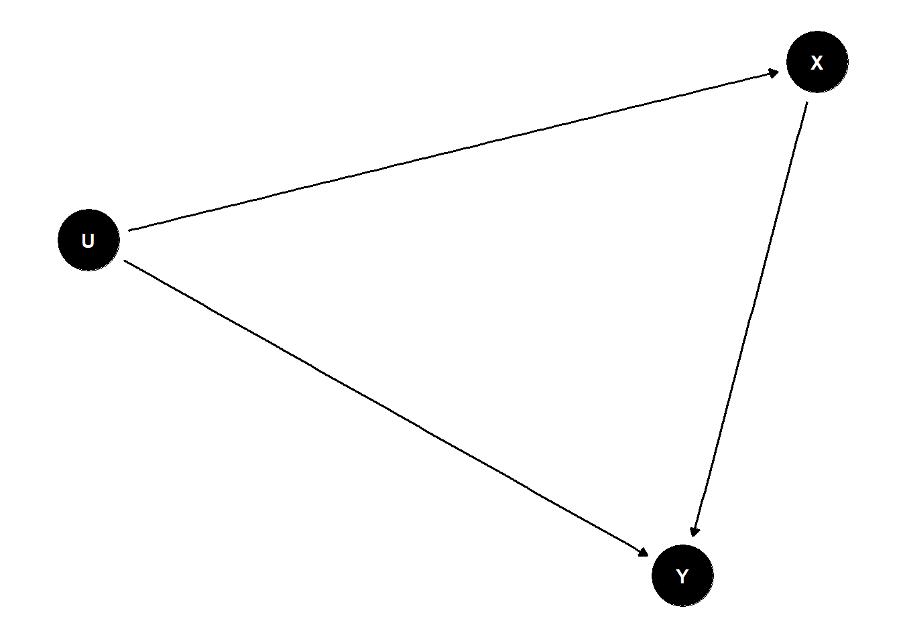
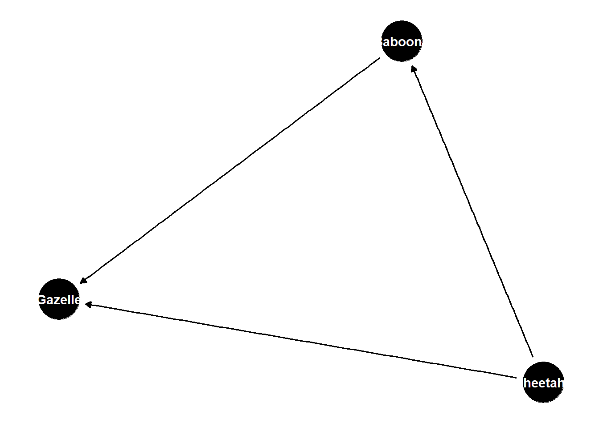
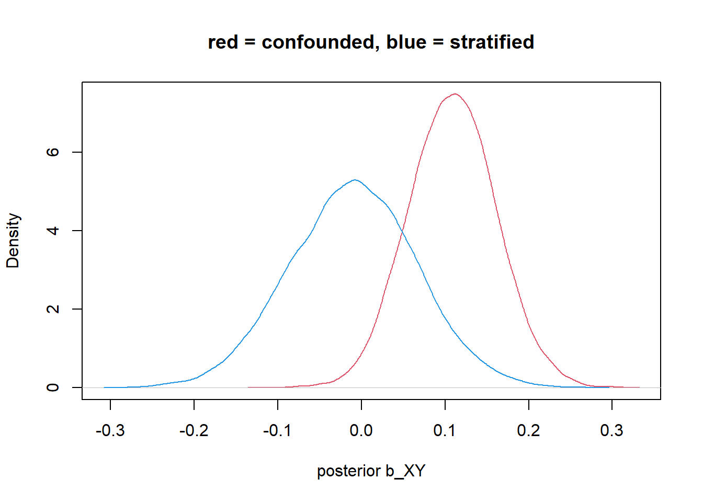
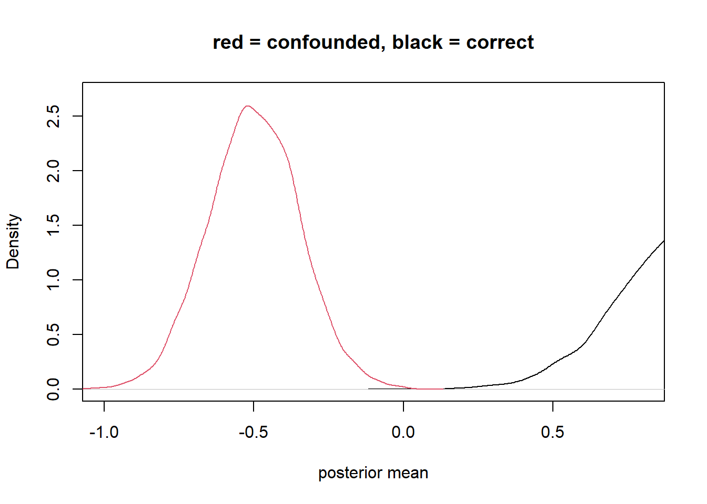
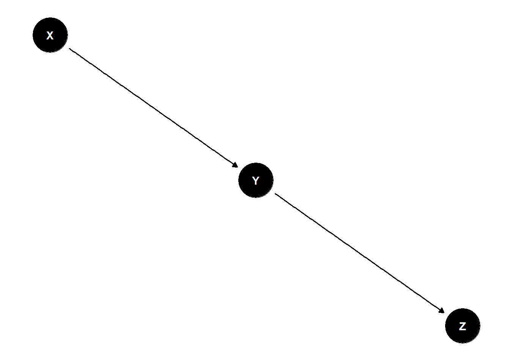
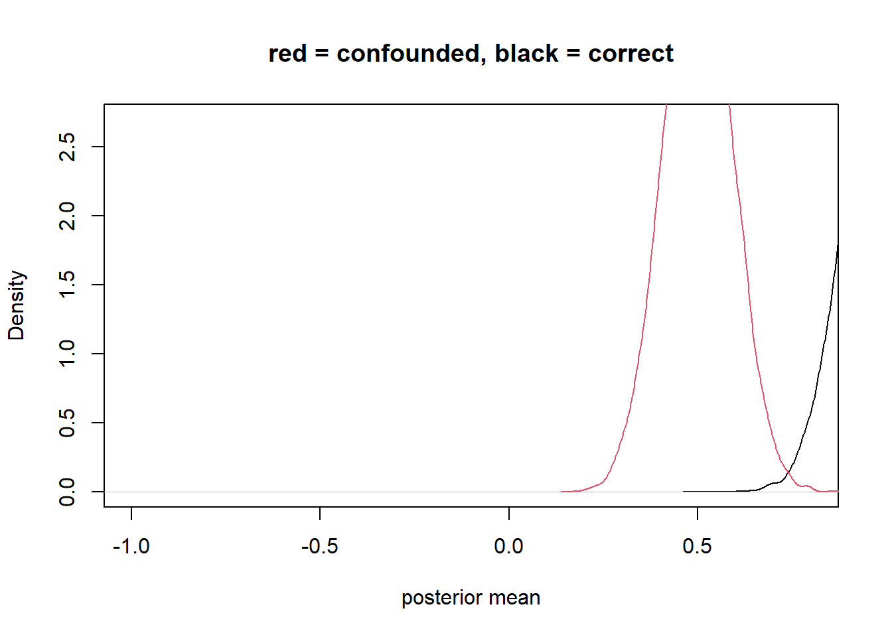
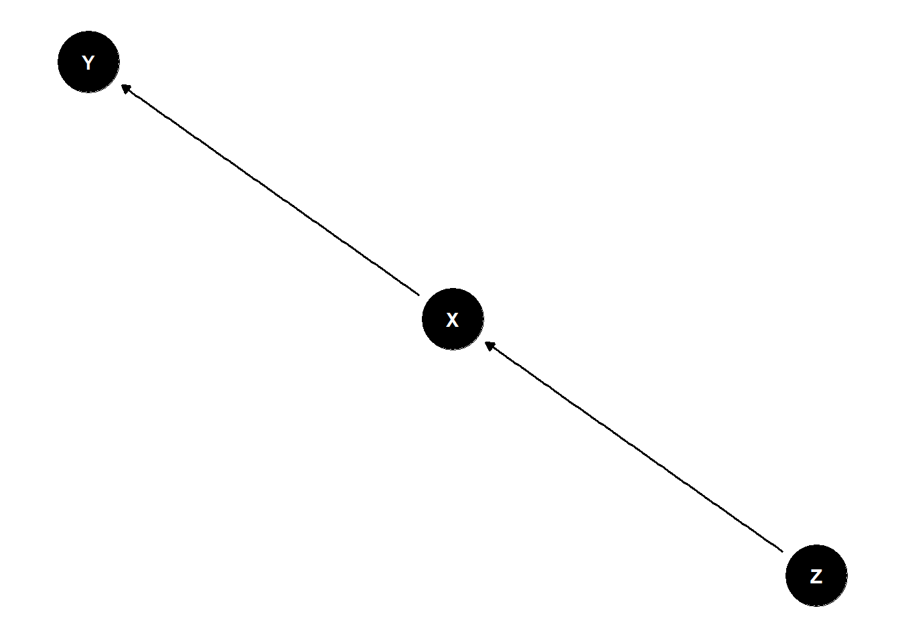
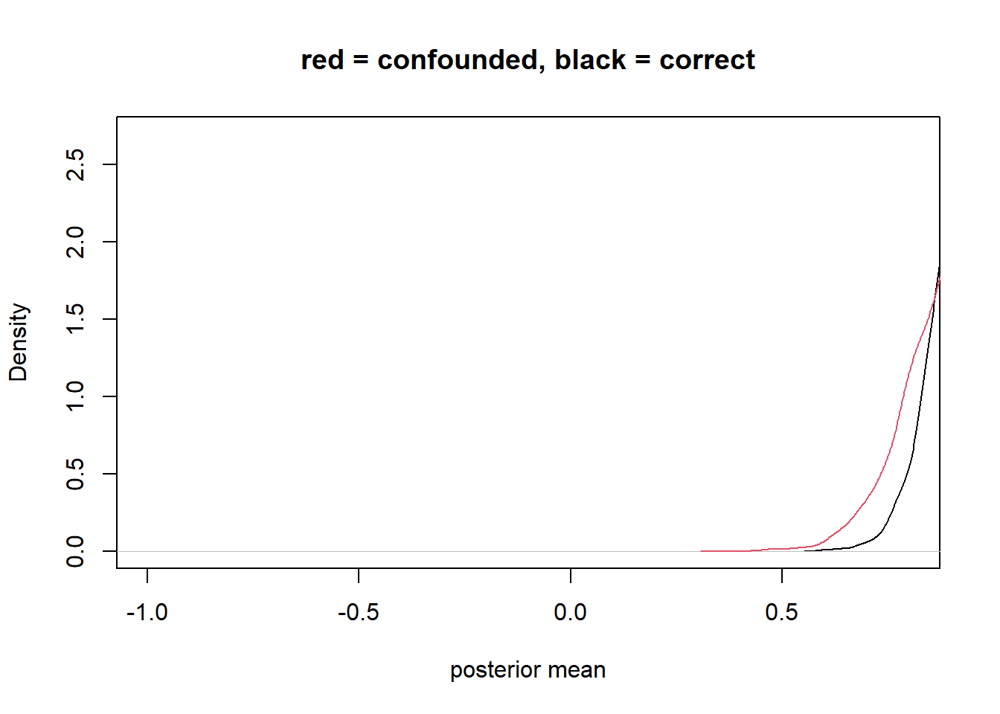
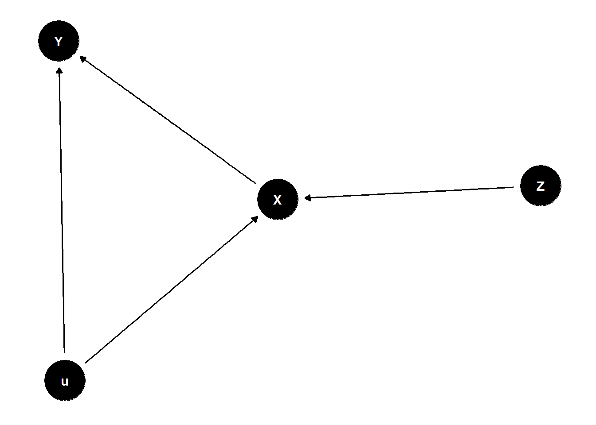

Lecture 06 - Good & Bad Controls
Rose / Thorn
Rose: identifying and working through bad controls
Thorn:
Randomization
- randomizing the treatment can remove the confound (only available for experiments)
Causal Thinking
in an experiment, we cut causes of the treatment -> we randomize
simulating intervention mimics randomization
do(X) means intervene on X
example: simple confound
dag <- dagify(
X ~ U,
Y ~ U + X
)
ggdag(dag) +
theme_dag()
stratifying by U removes causal relationship and allows to test effect of X -> Y
marginalize or average over control variables
- the coefficient is not usually satisfactory, need to marginalize
dag <- dagify(
Baboons ~ Cheetahs,
Gazelle ~ Baboons + Cheetahs
)
ggdag(dag) +
theme_dag()
populations of each of these species influences the other
when cheetahs are present, baboons are scared and do not influence gazelle population
when cheetahs are absent, baboons eat and regulate gazelle population
to assess causal effect of baboons, need to average over cheetah population
Do-Calculus
allows us to determine if it is possible to answer our question using a DAG
backdoor criterion
shortcut to apply do-calculus to use your eyes
rule to find a set of variables to stratify by to yield estimate of our estimand
- identify all paths connecting treatment (X) to outcome (Y)
- paths with arrows entering X are backdoor paths (non-causal paths)
- find adjustment set that closes/blocks all backdoor paths
# simulate confounded Y
N <- 200
b_XY <- 0
b_UY <- -1
b_UZ <- -1
b_ZX <- 1
set.seed(10)
U <- rbern(N)
Z <- rnorm(N, b_UZ*U)
X <- rnorm(N, b_ZX*Z)
Y <- rnorm(N, b_XY*X + b_UY*U)
d <- list(Y=Y, X=X, Z=Z)
# ignore U,Z
m_YX <- quap(alist(
Y ~ dnorm(mu, sigma),
mu <- a + b_XY*X,
a ~ dnorm(0,1),
b_XY ~ dnorm(0, 1),
sigma ~ dexp(1)
), data = d)
# stratify by Z
m_YXZ <- quap(alist(
Y ~ dnorm(mu, sigma),
mu <- a + b_XY*X + b_Z*Z,
a ~ dnorm(0,1),
c(b_XY, b_Z) ~ dnorm(0, 1),
sigma ~ dexp(1)
), data = d)
post <- extract.samples(m_YX)
post2 <- extract.samples(m_YXZ)
dens(post$b_XY)
#dens(post2$b_XY, add = TRUE)any variable you add to a model as part of the adjustment set (ie to control for), its coefficients are usually not interpretable
minimum adjustment set is not always the best set
Good & Bad Controls
control variable: variable introduced to an analysis so that a causal estimate is possible
- good and bad controls
variables not being collinear is not a good reason for including/excluding variables
- collinearity can arise from many statistical processes
post-treatment variables are often risky controls
if there is no backdoor path to variable of interest, you don’t need to control for it
# sim confounding by post-treatment variable
f <- function(n=100,bXZ=1,bZY=1) {
X <- rnorm(n)
u <- rnorm(n)
Z <- rnorm(n, bXZ*X + u)
Y <- rnorm(n, bZY*Z + u )
bX <- coef( lm(Y ~ X) )['X']
bXZ <- coef( lm(Y ~ X + Z) )['X']
return( c(bX,bXZ) )
}
sim <- mcreplicate( 1e4 , f(bZY=0), mc.cores = 1)[ 1000 / 10000 ]
[ 2000 / 10000 ]
[ 3000 / 10000 ]
[ 4000 / 10000 ]
[ 5000 / 10000 ]
[ 6000 / 10000 ]
[ 7000 / 10000 ]
[ 8000 / 10000 ]
[ 9000 / 10000 ]
[ 10000 / 10000 ]dens( sim[1,] , lwd=3 , xlab="posterior mean" , xlim=c(-1,0.8) , ylim=c(0,2.7) )#dens( sim[2,] , lwd=3 , col=2 , add=TRUE )case control bias (selection on outcome)
very bad to add descendents of your outcome to your model
weakly stratifying by the outcome (e.g., stratifying by Z)
dag <- dagify(
Y ~ X,
Z ~ Y
)
ggdag(dag) +
theme_dag()
f <- function(n=100,bXY=1,bYZ=1) {
X <- rnorm(n)
Y <- rnorm(n, bXY*X )
Z <- rnorm(n, bYZ*Y )
bX <- coef( lm(Y ~ X) )['X']
bXZ <- coef( lm(Y ~ X + Z) )['X']
return( c(bX,bXZ) )
}
sim <- mcreplicate( 1e4 , f(), mc.cores = 1 )[ 1000 / 10000 ]
[ 2000 / 10000 ]
[ 3000 / 10000 ]
[ 4000 / 10000 ]
[ 5000 / 10000 ]
[ 6000 / 10000 ]
[ 7000 / 10000 ]
[ 8000 / 10000 ]
[ 9000 / 10000 ]
[ 10000 / 10000 ]dens( sim[1,] , lwd=3 , xlab="posterior mean" , xlim=c(0,1.5) , ylim=c(0,5) )
#dens( sim[2,] , lwd=3 , col=2 , add=TRUE )precision parasite
no backdoors because Z is not connected to Y except through X
not good to stratify Z because you are explaining part of the effect of X with Z
dag <- dagify(
Y ~ X,
X ~ Z
)
ggdag(dag) +
theme_dag()
f <- function(n=100,bZX=1,bXY=1) {
Z <- rnorm(n)
X <- rnorm(n, bZX*Z )
Y <- rnorm(n, bXY*X )
bX <- coef( lm(Y ~ X) )['X']
bXZ <- coef( lm(Y ~ X + Z) )['X']
return( c(bX,bXZ) )
}
sim <- mcreplicate( 1e4 , f(n=50), mc.cores = 1 )[ 1000 / 10000 ]
[ 2000 / 10000 ]
[ 3000 / 10000 ]
[ 4000 / 10000 ]
[ 5000 / 10000 ]
[ 6000 / 10000 ]
[ 7000 / 10000 ]
[ 8000 / 10000 ]
[ 9000 / 10000 ]
[ 10000 / 10000 ]dens( sim[1,] , lwd=3 , xlab="posterior mean" , xlim=c(0.5,1.5) , ylim=c(0,4.5) )
dens( sim[2,] , lwd=3 , col=2 , add=TRUE )
bias amplification
X and Y confounded by u
adding Z biases your answer because it “double” activates the confound
dag <- dagify(
Y ~ X + u,
X ~ Z + u
)
ggdag(dag) +
theme_dag()
f <- function(n=100,bZX=1,bXY=1) {
Z <- rnorm(n)
u <- rnorm(n)
X <- rnorm(n, bZX*Z + u )
Y <- rnorm(n, bXY*X + u )
bX <- coef( lm(Y ~ X) )['X']
bXZ <- coef( lm(Y ~ X + Z) )['X']
return( c(bX,bXZ) )
}
sim <- mcreplicate( 1e4 , f(bXY=0), mc.cores = 1)[ 1000 / 10000 ]
[ 2000 / 10000 ]
[ 3000 / 10000 ]
[ 4000 / 10000 ]
[ 5000 / 10000 ]
[ 6000 / 10000 ]
[ 7000 / 10000 ]
[ 8000 / 10000 ]
[ 9000 / 10000 ]
[ 10000 / 10000 ]dens( sim[1,] , lwd=3 , xlab="posterior mean" , xlim=c(-0.5,1) , ylim=c(0,5.5) )
#dens( sim[2,] , lwd=3 , col=2 , add=TRUE )
abline_w <- function(...,col=1,lwd=1,dlwd=2) {
abline(...,col="white",lwd=lwd+dlwd)
abline(...,col=col,lwd=lwd)
}
n <- 1000
Z <- rbern(n)
u <- rnorm(n)
X <- rnorm(n, 7*Z + u )
Y <- rnorm(n, 0*X + u )
cols <- c( col.alpha(2,0.5) , col.alpha(4,0.5) )
plot( X , Y , col=cols[Z+1] , lwd=2 )
#abline_w( lm(Y~X) , lwd=3 )
#
#abline_w( lm(Y[Z==1]~X[Z==1]) , lwd=3 , col=4 )
#
#abline_w( lm(Y[Z==0]~X[Z==0]) , lwd=3 , col=2 )Summary
adding control variables can be worse than omitting
there are good controls - backdoor criterion
make assumptions explicit
Bonus - Table 2 Fallacy
not all coefficients are causal effects
statistical model designed to identify X -> Y will not also identify effects of control variables
\(Y_i \sim Normal(\mu_i, \sigma)\)
\(\mu_i = \alpha + \beta_xX_i + \beta_SS_i + \beta_AA_i\)
think through DAG for each control variable to see what the coefficient actually means
no interpretation without causal representation
TODO
- read Table 2 Fallacy paper